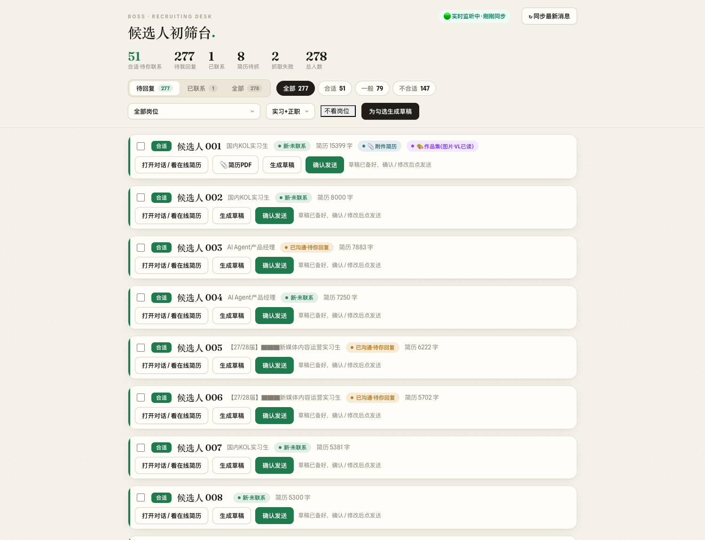
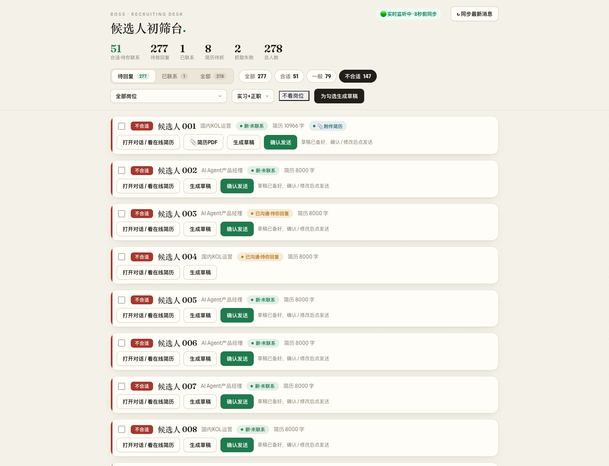

HR 候选人初筛看板
一家企业的 HR 每天要在招聘平台上翻几百份投递。我把这件事拆成三段：浏览器自动化把简历采下来、 大模型按岗位标准分档、人看一眼再决定发不发。 已处理 428 位候选人。
关于下面的截图——这是真机运行画面，已经过脱敏： 候选人姓名替换为顺序编号（替换文本而非打码，无法反解）、用人单位品牌名遮蔽、 简历正文与聊天消息整块不渲染。只展示列表形态，不展示任何单条会话详情。经用人方同意。

已初筛候选人
278 条直投 + 150 条跨会话合并去重
浏览器抓取任务
带状态机与重试，失败单独归档可重投
岗位并行
每个岗位一套判据，同一份简历按投递岗位分别判定
01问题
对方开了 9 个岗位同时招人。投递进来的简历质量参差，HR 的时间几乎全花在 「打开一份、读完、判断、关掉」这个循环上——而其中大部分在读到第三行就能排除。 真正稀缺的不是判断力，是把判断力用在值得判断的那部分人身上。
所以这个系统要做的不是替 HR 做决定，是把 428 个人先排成一个有序队列， 让人从第一个开始看，而不是从最新一个开始看。
02把「抓」和「判」拆开
最早的版本是抓一份判一份。结果是改一次判据就得重抓一遍——而抓取要开浏览器、 要等页面、会被限流，一轮几个小时；判定纯调模型，一轮几分钟。两件事的成本差了两个数量级， 绑在一起就等于按最贵的那件计价。
拆开之后：采集侧只负责把简历正文落库，带独立的状态机（未抓 / 成功 / 内容过短 / 跳过），
失败的单独归档等重投；判定侧只读库、只调模型。
调整判据时重跑的是后者，几分钟出全量新结果。
这是整个项目里最关键的一个决定。
03判定与兜底
判定用 DeepSeek 深度思考模式，输出三档：合适 / 一般 / 不合适，并且必须给出理由—— 理由不是给模型看的，是给 HR 看的，她要能在三秒内判断「这个判定我信不信」。 428 人的分布是 不合适 189 / 一般 136 / 合适 103。
有一类简历是图片——设计、剪辑岗尤其多，作品集直接甩几张图。这类走 Qwen3-VL 读图兜底， 读出来的内容跟文本简历进同一条判定链路，在看板上标一个「作品集·VL 已读」的徽章， 让 HR 知道这条的信息来源是图不是文。

04为什么不让它自动发消息
系统会为「合适」的候选人生成打招呼草稿，但不发。 草稿停在输入框里，HR 看过、可以改，点「确认发送」才出去。
这不是能力问题——自动发很容易。是因为这条链路的另一端是正在找工作的人。 模型判错一次的代价，对系统是一行日志，对那个人是一次没有回音的投递。 采集侧同理，全程只读，不代替用户做任何写操作。
05工程上踩过的坑
平台页面是长期在线跑的，浏览器会崩、会卡在某个 modal 上不动。加了心跳与自愈： 检测到会话失效就重建上下文，从上次的进度继续，不从头再来。
另一个是同一个人投了多个岗位——平台侧是多条会话，业务上是一个人。 428 条里有 150 条是跨会话合并来的，合并键要既能认出同一个人，又不能把同名的两个人并掉。
06这件事的收尾
这套系统里真正可复用的不是那几千行 Python，是「昂贵的采集与廉价的判定分离」 这个结构，以及「Agent 采集、人做决定」这条边界。 后续我把这两点作为一个 agent 收进了自己的 DOCX Agent Studio， 复用其中已有的浏览器常驻与人工接管基建——而不是把这些 Python 再搬一遍。